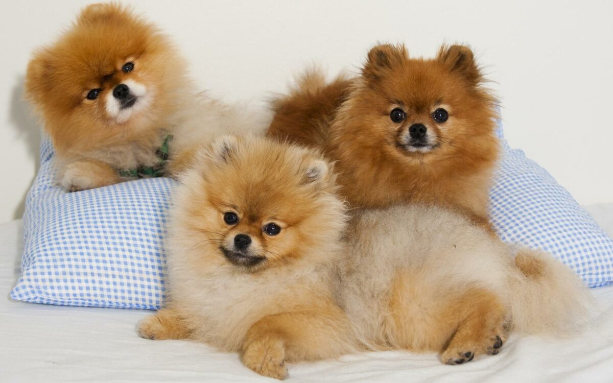

سگ پامرانین جزء سگهای کوچک و عروسکی به حساب میاد و نیاز به رژیم غذایی خاصی داره. به طور مثال این نژاد فک و آرواره کوچکی داره و به همین دلیل دانههای غذای خشک باید ریز باشن تا بتونه به راحتی اونا رو بجوه و قورت بده. همینطور تغذیه صحیح و مناسب میتونه از بسیاری از بیماریها و مشکلات نژادی پامرانین جلوگیری کنه.
در این مطلب در مورد غذای سگ پامرانین و ویژگیهایی لازم در تغذیه این سگ زیبا و بازیگوش از تولگی تا دوران بلوغ و بزرگسالی صحبت میکنیم. اگه شما هم صاحب یکی از این سگهای خاص و خوشگل هستید یا در آینده قصد نگهداری از سگ پامرانین دارید در این مطلب همراه ما باشید.
غذای سگ پامرانین چیست؟
اجداد پامرانینهای خرسی و روباهی سگهایی بسیار بزرگتر از الان بودند، حدود ۱۰-۱۵ کیلو وزن داشتن و در کارهایی مثل دامداری و گاهی به عنوان سگ سورتمه استفاده میشدن. سگ های پامرانین تاریخچهی جذاب و ویژگی های منحصر به فردی دارن.
اگه چیز زیادی در مورد این سگ باهوش نمی دونین پیشنهاد میکنم مقاله «سگ پامرانین» مطالعه کنین، تا حتی چیزهایی که کمتر در مورد سگ پامر گفته شده رو بدونین.
نژاد پامرانین امروزی با این که جثه بسیار کوچکتری داره اما هنوز موها و خز پرپشت و زیبای اجدادش و علاوه بر این، همون انرژی بالا رو به ارث برده؛ به همین دلیل در رژیم غذای سگ پامر باید این نکته مهم رو در نظر داشته باشید.
غذای پامرانین روباهی و خرسی با هم تفاوتی نداره، چون این دو اصطلاح صرفا به خاطر ظاهرشون به پامرانینها گفته میشه و بجز ظاهر تفاوت دیگهای با هم ندارن.
اگه تازه میخواید پامرانین بیارید تا حتی اگه سگ پامرانین دارید پیشنهاد میکنیم مطلب وسایل سگ رو بخونید تا یه موقع چیزی رو از قلم ننداخته باشید.

مشکل هیپوگلیسمی یا افت قند خون در سگ پامرانین و تاثیر رژیم غذایی
بسیاری از سگهای عروسکی مثل پامرانین در صورتی که به اندازه کافی غذا نخورن ممکنه دچار افت ناگهانی قند خون یا هیپوگلیسمی بشن.
ازونجایی که یکی از بزرگترین مشکلات صاحبان پامرانین اینه که سگشون به اندازه کافی غذا نمیخوره؛ پس باید به دقت مراقب غذا خوردن و تغذیه سگ پامرانین باشید.
البته پامرانینها از طرفی مستعد چاقی هم هستن! پس اگه حس کردید سگتون بیش از حد غذا میخوره یا وزنش کمی زیاد شده کنترل بیشتری روی مقدار و تعداد وعدههای غذای پامر زیباتون داشته باشید.
بهترین غذا برای سگ پامرانین برای مشکل درماتیت پوستی
یکی دیگه از مشکلات نژادی پامرانینها مشکل درماتیت یا التهاب و بثورات پوستی هست که باعث خشکی و خارش سطح پوست میشه. این مشکل که بیشتر در تولهها به وجود میاد ظاهرا به خاطر موهای متراکم پامرانیه که اجازه رسیدن هوا به پوست رو نمیده.
علاوه بر برس و نظافت روزانه، رژیم غذایی که سرشار از اسیدهای چرب ضروری مثل امگا ۳ و امگا ۶ باشه هم به بهبود و پیشگیری از این مشکل در پامرانینها کمک زیادی میکنه.

غذای خانگی برای پامرانین خوبه؟
استفاده از غذاهای خشک بیکیفیت و ارزان به سلامت پامرانین آسیب میزنه. این غذاها پر از مواد سیرکننده و کربوهیدرات هستن و مواد مغذی بسیار کمی دارن؛ در نتیجه در دراز مدت سگتون دچار مشکلات سلامتی جدی میشه.
پامرانینها خیلی کوچولو هستن و به خاطر معده کوچیکشون زود سیر میشن؛ پس لازمه که غذای باکیفیت و مقوی بهشون داده بشه.
اگه دوست دارین برای سگتون آشپزی کنید باید حواستون باشه که:
غذای خانگی حتما باید ترکیباتش متناسب با نیازهای تغذیهای این سگها باشه و مقدار و ترکیباتش هم کاملا بالانس شده باشه. وگرنه غذایی که به سگتون میدین ممکنه حتی باعث بروز مشکلات سلامتی براش بشه.
حالا چطوری باید غذای سگ رو بالانس کرد؟
خیالت راحت، ما این راهو بلدیم و دامپزشکهای پت پرس میتونن برنامه غذایی اختصاصی برای سگتون تهیه کنن. کافیه مشخصات سگتون رو به دامپزشک بدین و بعد رژیم غذایی کامل رو دریافت کنید.
این برنامه کاملترین و بهترین غذا برای سگ شماست و تمام نیازهای تغذیهایش رو تامین میکنه و حتی میتونه جایگزین غذای خشک سگ تجاری بشه.
دوست داری از تیم تغذیه پت پرس برای سگ قشنگت برنامه غذایی خونگی بگیری؟
سفارش آسان از طریق اپلیکیشن یا پر کردن فرم در صفحه برنامه غذایی

مواد غذایی خطرناک برای سگ پامرانین
- شکلات
- قهوه
- سیر و پیاز
- انگور و کشمش (مطلب مرتبط: انگور برای سگ)
- ذرت
- غذاهای شور، تند و پرادویه
لیست بالا غذاهای مضر برای پامرانین هست و ممکنه این موارد بین سگ های دیگر هم مشترک باشد. اینکه چه نوع غذایی برای سگ شما مضره به عوامل مختلفی بستگی داره؛ اما شما می تونین لیست مواد مضر برای سگ ها رو در مقاله «غذاهای ممنوعه برای سگ» به صورت کامل مطالعه کنین.
بهترین غذای خشک برای سگ پامرانین
اگر میخواید سگ پامرانین رو با غذای خشک تغذیه کنید به یاد داشته باشید که:
نکته بسیار مهم در انتخاب غذای خشک سگ پامرانین اینه که دانههای غذا باید کوچک باشن تا بتونه به راحتی اونا رو بجوه و قورت بده.
پامرانینها فک و آرواره خیلی ظریف و کوچکی دارن و اگه دانههای غذای خشک بیش از حد بزرگ باشن ممکنه اتفاقی تو گلوشون گیر کنه و باعث خفگی بشه؛ این مشکل مخصوصا در مورد پامرانینهایی که غذاشون رو تندتند و بدون جویدن میخورن بیشتر پیش میاد.
از طرفی، غذای خشک مناسب برای پامرانین باید کربوهیدرات و موادسیرکننده کمی داشته باشه و پروتئین و انرژی و اسیدهای چرب مفید بیشتری داشته باشه.
اغلب برندهای معتبر مثل رویال کنین غذای خشک مخصوص نژاد سگ کوچک مثل پامرانین دارن که فرمولاسیونش دقیقا مطابق با نیازهای این سگها تهیه شده.

غذای خشک سگ رویال کنین Mini Indoor Adult
ترکیبات: برنج، مرغ، چربی مرغ، چغندر، روغن ماهی، روغن گیاهی، ویتامینها و مواد معدنی
- این غذا مخصوص نژادهای کوچک مثل پامرانین تهیه شده که داخل خونه زندگی میکنن.
- فرمولاسیون این غذا طوری طراحی شده که انرژی مورد نیاز این سگها رو فراهم کنه، بدون اینکه باعث اضافه وزن و چاقی اونا بشه.
- اسیدهای چرب موجود در این غذا به سلامت و زیبایی پوست و موی پامرانین کمک میکنه.
- همچنین پروتئین قابل هضم باعث کاهش حجم و بوی بد مدفوع میشه.
برای خرید و مشاهده قیمت غذای سگ پامرانین روی لینک زیر کلیک کنید.
غذای کنسروی برای نژاد پامرانین
غذاهای کنسروی مخصوص سگ هم میتونه بخشی (نه زیاد) از غذای پامرانین رو تشکیل بده و مثلا در ترکیب با غذای خشک باعث خوش خوراکتر شدن غذا برای سگتون بشه.
کنسرو برندهای معتبر رو خریداری کنید که پروتئین زیادی داشته باشه و کمتر از مواد سیرکننده و بیخاصیت استفاده کرده باشه. چون همونطور که گفتیم پامرانینها معده کوچکی دارن و بهتره این حجم کوچک با مواد مغذی و مفید پر بشه.
مطلب کنسرو سگ رو بخونید تا در مورد بهترین نوع کنسرو برای پامرانین کوچولوتون اطلاعات بیشتری پیدا کنید.

کنسرو سگ نژاد کوچک رویال کنین
ترکیبات: گوشت و مشتقات حیوانی، غلات، چربی و روغنهای مفید، مواد معدنی
- کنسرو سگ رویال کنین غذای مخصوص سگ پامرانین و نژادهای کوچک و عروسکیه که در حالت بالغ زیر ۱۰ کیلوگرم وزن دارن.
- این غذا بسیار خوش خوراک و کم کالریه و از چاقی و اضافه وزن در سگ جلوگیری میکنه.
- کنسرو رو میتونید به صورت جداگانه یا در ترکیب با غذای خشک به پامرانین بدید.


غذای توله سگ پامرانین از بدو تولد تا یک سالگی
توله های بامزه و پفدار پامرانین در سن رشد قرار دارن و بیشتر از سگهای بالغ غذا میخورن. سگهای نژاد کوچک مثل پامرانین سوخت و ساز و متابولیسم بسیار سریعی دارن و در مقایسه با نژادهای بزرگ به کالری و انرژی بیشتری نیاز دارن.
از طرفی سگهای نژاد کوچک مثل پامرانین مستعد هیپلوگلیسمی یا افت قند خون هستن و به همین دلیل نباید مدت طولانی گرسنه بمونن.
غذای مناسب برای توله سگ پامرانین باید حاوی ۱۰-۲۵% چربی و ۲۲-۳۲% پروتئین باشه.
تغذیه سگ پامرانین تازه به دنیا آمده
غذای توله سگ باید تا هشت هفتگی یا ۲ ماهگی شیر مادرش باشه و از اون تغذیه کنه. این نکته در سلامت و طول عمر سگ اهمیت زیادی داره و نباید ازش غافل شد. بنابراین از حدود ۲ ماهگی به بعد میتونید توله پامرانین رو به خونه بیارید؛ اما بازم تاکید میکنیم از خرید تولههای زیر هشت هفته خودداری کنید.
اگه بنابه هردلیل مجبور به نگهداری از یه توله سگ پامرانین زیر هشت هفته بدون مادر هستید باید حتما بهش شیر خشک مخصوص توله سگ بدید و از دادن شیر گاو و بز و … اکیدا خودداری کنید.
پیشنهاد میکنیم مطلب نگهداری از توله سگ رو بخونید و دقیقا طبق دستورات اون عمل کنید.

غذای سگ پامرانین دو ماهه تا سه ماه
توله پامرانین ۲ ماهه که تازه به خونهتون اومده اشتهای زیادی داره و باید همیشه غذا در دسترسش باشه. تولههای پامرانین خیلی زود دچار کاهش قند خون میشن و یکی از دلایل این موضوع، به اندازه کافی غذا نخوردن و گرسنگی هست.
توله پامرانین اونقدر شیطون و بازیگوشه که اغلب یادش میره غذا بخوره و به همین دلیل باید هرازگاهی بهش ظرف غذا رو نشون بدید و تشویقش کنید غذا بخوره. بنابراین:
- غذای خشک مخصوص توله سگ همیشه در دسترس باشه.
- آب تازه در اختیارش باشه.
- ۳-۴ بار در روز بهش غذای کنسروی، مرغ پخته و شیر مخصوص توله سگ بدید
تغذیه سگ پامرانین ۳ ماه تا یک سال
از سن ۳ ماهگی تا ۱ سالگی بهتره وعدههای غذایی رو به ۳ بار در روز کاهش بدید و در فواصلش بهش تشویقی و اسنک بدید. تغذیه پامرانین خیلی حساسه، چون هم باید حواستون باشه که به اندازه کافی غذا بخورن و گشنه نمون و هم اینکه بیش از حد غذا نخورن و دچار چاقی نشن!
نکات مهم تغذیه ای توله سگ پامرانین
- از دادن گوشت قرمز به توله پامرانین خودداری کنید.
- از دادن مکمل کلسیم خودداری کنید.
- با اضافه کردن شیر مخصوص توله سگ و لبنیات مقدار کلسیم دریافتی رو بیشتر کنید.
- به توله پامرانین غذای سگ بالغ ندید!
- غذای خانگی برای توله سگ پامرانین باید حتما توسط دامپزشک بالانس شده باشه (دستور غذایی)

غذای سگ پامرانین رویال کنین
ترکیبات: مرغ، برنج، ذرت، چربی مرغ، گندم، چغندر، روغن ماهی، ویتامینها و مواد معدنی
- این غذا اختصاصا برای تولههای نژاد خیلی کوچک مثل پامرانین تهیه شده که در حالت بالغ وزنشون کمتر از ۴ کیلوگرمه.
- توله سگهای عروسکی و مینیاتوری مثل پامرانین سن رشد کوتاهتری دارن و خیلی مهمه که در این دوران تغذیه کافی و مناسبی داشته باشن.
- ترکیب آنتی اکسیدانها و مواد معدنی موجود در این غذا به تقویت و بهبود سیستم ایمنی تولهها کمک زیادی میکنه.
- دانههای ریز این غذا کاملا متناسب با فک و دندانهای کوچکتر تولههای نژاد کوچک طراحی شدن.

رژیم غذایی مناسب برای سگ پامرانین بالغ
پامرانین در یکسالگی کاملا بالغ و بزرگسال به حساب میاد؛ با این حال هنوز هم بهتره ۳ بار در روز بهش غذا بدید. هرچند بعضی سگهای پامرانین با دو بار غذا در روز هم مشکلی ندارن. در فواصل وعدههای غذایی اسنک و تشویقی رو فراموش نکنید.
از سنین ۹-۱۰ ماهگی بهتره غذای پامرانین رو از غذای مخصوص توله سگ به غذای پامرانین بالغ تغییر بدید. چون از این سن به بعد رشد توله بسیار کند و حتی متوقف شده و غذای مخصوص توله سگ حاوی مقادر زیادی کالری و چربی هست.
همچنین در حدود ۸-۹ سالگی هم بهتره کم کم به فکر تغییر غذای سگتون به غذای مخصوص سگ مسن و سالخورده باشید. (مطلب مرتبط: تغییر غذای سگ)
خوشبختانه برخی برندهای غذای سگ، محصولات اختصاصی برای سگهای مسن دارن که میتونید از اونا استفاده کنید.
مهمترین تفاوت غذای سگ مسن مقادیر بیشتر انواع اسیدهای چرب امگا و گلوکوزامین هست که برای مفاصل و استخوانها بسیار مفید و ضروریه.

غذای خشک سگ جوسرا Mini Junior
ترکیبات: پروتئین گوشت اردک ۲۳%، برنج، سیب زمینی، چربی طیور، فیبر چغندر، سالمون خشک شده ۴%، مواد معدنی و ویتامین
- غذای سگ جوسرا دانههای ریزی داره که برای سگهای نژاد کوچک مثل پامرانین کاملا مناسبه.
- اسیدهای چرب مفید موجود در این غذا به سلامت پوست و درخشندگی موهای زیبای پامرانین کمک میکنه.

مقدار غذای سگ پامرانین
مقدار غذای پامرانین به سن، وزن، نوع غذا و میزان فعالیت بستگی داره و با استفاده از جدولی که روی بستههای غذای خشک و کنسروی هست میتونید مقدار غذای سگ رو مشخص کنید.
چاقی سگ همیشه در کمین است!
سگ پامرانین معده کوچیکی داره و خیلی زود سیر میشه؛ اما اگه بیش از حد نیاز بهش غذا بدید خیلی زود دچار اضافه وزن و چاقی سگ میشه.
تغذیه بیش از حد توله پامرانین که در سن رشد قرار داره باعث ناهنجاری و رشد غیرعادی استخوانها و مفاصل میشه و در بزرگسالی دچار مشکلات جدی سلامتی میشه.
برای اینکه تشخیص بدید سگتون دچار چاقی شده یا نه، دستتون رو روی دندههای سگ بکشید. اگه استخوانهای دنده رو به راحتی حس کردید سگتون وزنی متعادل داره، در غیراینصورت سگتون احتما کمی اضافه وزن داره.
البته اینم بگیم که دندههای سگ نباید بیرون زده و قابل مشاهده باشه چون در این صورت سگتون بیش از حد لاغر و ضعیفه و نشون میده که تغذیه کافی و مناسبی نداره.

غذا سگ پامرانین شما چیه؟
در این مطلب سعی کردیم تمامی اطلاعات لازم در مورد غذای سگ پامرانین رو در اختیار شما قرار بدیم. شما از چه محصول و غذایی برای پامرانین کوچولوتون استفاده میکنید؟ به نظرتون بهترین غذا برای سگ پامر چیه؟ لطفا برای ما کامنت بگذارید و نظر و تجربیات خودتون رو با ما و دیگر خوانندگان به اشتراک بگذارید.

درود
نژاد سگ من شیزو-پامرانین هست که زادروزش ۵ آذرماه ۹۵ هست
چند ماه پیش بخاطر غفلتی که کردم زیر ماشین رفت و ۳ جای لگن و ۴ جای پای چپش شکست که با علم جراحی، بهبودی رو به معالجه کامل داره پیدا میکنه
چون قبلا در باغ و بهمراه سگهای بزرگ زندگی میکرده، از نان گرفته تا گردن و بال مرغ پخته بهش میدادند
از زمانیکه سرپرستیش را قبول کردم، بال مرغ را خوب میخورد اما دیگه نه نان خالی میخوره و نه متمایل به یکنواختی غذاست و حتما باید تنوع غذایی داشته باشه
به راهنمایی دوستی، برند غذای خشک مفید را براش تهیه کردم، سنپل را به خوبی و ولع خورد اما پاکت اون را که خریداری کردم اصلا تمایل به خوردن نشون نداد حتی اونا گرسنه هم نگهداشتم و باز اصرار خودم مبادرت به خودنش کردم و چندی خورد و دیگه نخورد تا لاغر شد و مجددا روی به غذاهای خانگی بردم.
جالبه که سگ من مخصوصا بعد از تصادفش خیلی خیلی بد غذا شده
با اینکه خودش استخوانهای ریز مرغ را نمیخوره و اصلا میلی به گردن مرغ و پای مرغ هم نشون نمیده، از هر نوع تنوع غذایی استفاده کردم اما نتیجه بخش نبود مگر اونکه گوشت گوسفند را خیلی دوست داره که بودجه لازم برای تهیه این حجم گوشت برام جالب نیست.
لطفا اگر برند مناسبی برای تهیه غذای خشک میشناسید معرفی کنید تا با یک برنامه غذایی هفتگی بتونم علاقهمندیش را تحریک کنم
خاطر نشان کنم که غذای روز قبل را هم نمیخوره
از کمکتون سپاسگزارم
سلام امیر عزیز،
اتفاقا بهتر که علاقه ای به گردن و پای مرغ نداره چون بیشتر از فایده براش ضرر دارن. گوشت گوسفندم بهتره زیاد ندین چون بخاطر فسفر بالا و رقابتش با کلسیم میتونه در طولانی مدت باعث پوکی استخون بشه. پیشنهاد من اینه که باتوجه به گرونی غذاهای خشک خارجی و مرغوب، غذای خونگی استاندارد براش تدارک ببینین، همکارمون در این زمینه میتونن کمکتون کنن:
دریافت برنامه و دستور غذای خانگی سگ از دامپزشک (با توجه به ویژگی های سگ)
سلام ملیکا جون من خواستم از این غذا ها رو بخرم اما هیچ کدوم موجود نیست. شما چیز دیگه ای پیشنهاد نمیکنید؟
سلام نورا جان،
میتونین بهش غذای خونگی هم بدین ولی لازمه حتما براساس نیازهاش فرموله باشه. همکارمون در این زمینه میتونن کمکتون کنن:
دریافت برنامه و دستور غذای خانگی سگ از دامپزشک (با توجه به ویژگی های سگ)
خیلی خوشکلن خیلی کیوت هستن فقط قیمتاشون رو میخوام بدونم لطفا میشه قیمت رو بگید
سلام آیلا جان
بهتره که حیوونا به سرپرستی گرفته بشن تا خریداری.
ما فروشنده نیستیم و متاسفانه اطلاع دقیق و به روزی از قیمت ها نداریم
سلام ممنون از زحماتی که میکشید عالی بود
سلام سمیرا جان،
ممنون از لطفتون.